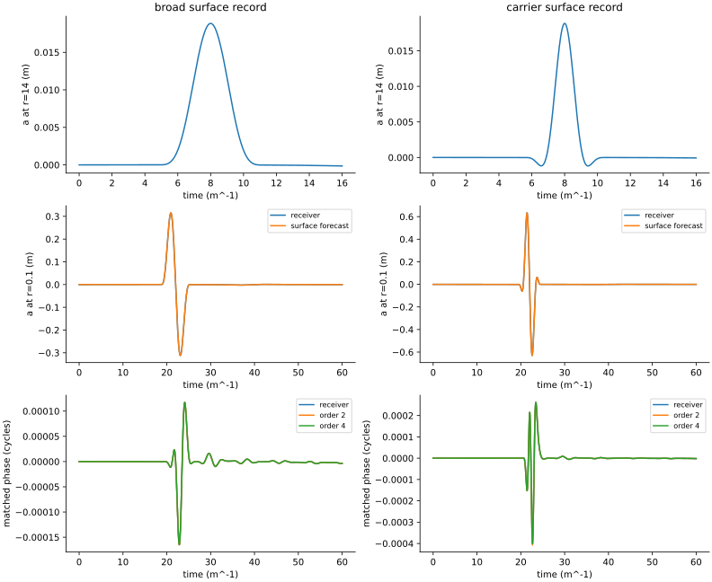
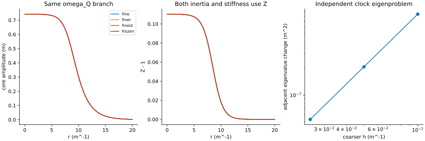
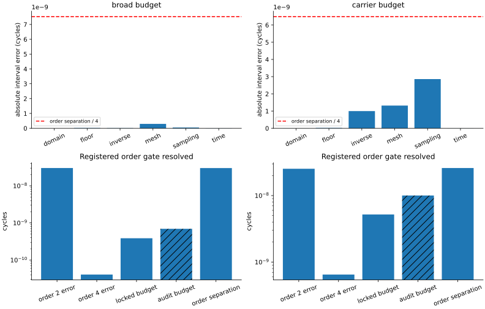
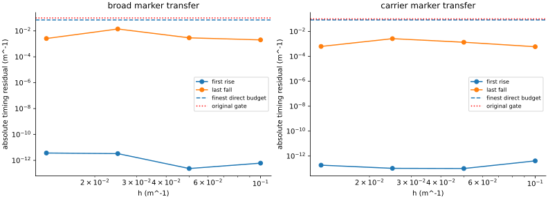

# Test 7 discrete-transfer discriminator Run run-941d5c9e1c37ccc8; analysis analysis-0001-792256a8; classification pass. Original Test 7 remains failed. Test 8 needs separate acceptance. No two-object, gravity, invariance or emergent-spacetime claim. conservation: pass continuum-convergence: pass fourth-order-prediction: pass marker-transfer: pass order-resolution: pass prediction-first: pass profile-refinement: pass sign-even: pass surface-inverse: pass broad: B=3.85775693e-10 cycles, order separation=3.00910121e-08, second error=3.01316078e-08, fourth error=4.05957144e-11. carrier: B=5.19670288e-09 cycles, order separation=2.59361432e-08, second error=2.52869622e-08, fourth error=6.49180984e-10. Post-hoc audit: original checks remain unchanged. Forecast convergence and known-source linear replay are additional diagnostics. broad: forecast-inclusive audit budget 6.93947311e-10 versus quarter-order target 7.52275302e-09 cycles. carrier: forecast-inclusive audit budget 1.00280038e-08 versus quarter-order target 6.48403580e-09 cycles. surface-transfer Question: Can an external record determine the local neutral and clock histories? Reading: Each column follows a different recorded spectrum from r=14 to r=0.1, at A=.012. Significance: The prediction uses a discrete initial-data inverse and derived response coefficients. Limitation: Synthetic acquisition assumes exact support and v=D_h b; this is not an unknown-source detector. profile-convergence Question: Does independent radial calibration converge beyond the old interpolated profile? Reading: Profiles are independently solved and frozen at each mesh; frozen denotes the earlier interpolated fine profile. Significance: Separates a refined physical preparation from merely interpolating old samples. Limitation: The calibrated readout frequency stays fixed; this does not repeat the 100-period longevity test. order-budget Question: Is the fourth-order improvement larger than every declared uncertainty? Reading: Compare both errors with the locked budget. The hatched post-hoc audit also includes convergence of the forecast itself. Significance: A fourth-order claim requires sufficient resolution on both spectra; the ordinary 5% gate is insufficient. Limitation: The audit cannot promote or rewrite a locked check. Budgets are difference estimates, not rigorous bounds. marker-convergence Question: Do first and last marker residuals decrease under refinement? Reading: Each point compares a locked forecast with independently evolved receiver markers on the same mesh. Significance: Tests the discrete transfer separately from clock-phase order discrimination. Limitation: First/last events are selected retrospectively in the declared window; no autonomous trigger is modeled.



